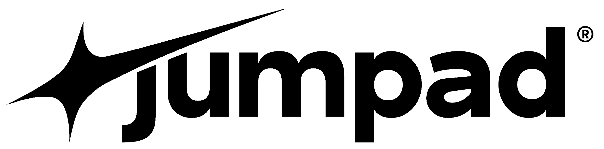

Feedback Loop · MeetTrack
Ajude-nos a priorizar o que importa.
Suas respostas moldam o futuro das nossas ferramentas. Avalie cada sugestão abaixo.
0 de 20 avaliadas

Feedback Loop · MeetTrack
Suas respostas moldam o futuro das nossas ferramentas. Avalie cada sugestão abaixo.
Suas contribuições são fundamentais para evoluirmos o produto.
Powered by InsightArc